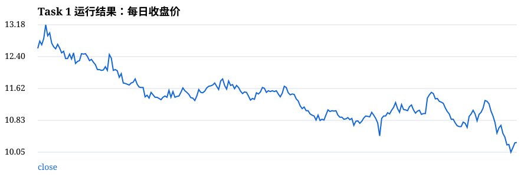

Task 1：量化交易基础与数据获取
1. 相较于传统手工操作交易的方法，量化交易有哪些优势？
量化交易把交易思想转化为可计算、可回测、可重复执行的规则。相比手工交易，它的优势主要包括：执行纪律更强，减少情绪化追涨杀跌；可以快速处理大量股票、行情和财务数据；策略可以通过历史数据回测，提前评估收益、回撤和风险；交易信号和下单过程可以自动化，提高速度和一致性；便于持续优化和风险控制，例如设置止损、仓位限制和组合分散。
2. 基本概念解释
K 线
K 线用开盘价、最高价、最低价、收盘价描述一个交易周期的价格变化，常用于观察趋势、波动和多空力量。
基本面
基本面关注公司盈利、资产负债、行业景气、宏观经济、政策等影响股票长期价值的因素。
技术面
技术面主要研究价格、成交量和技术指标，试图从市场行为中判断趋势、支撑阻力和买卖时机。
3. 网页展示真实 Tushare 日线数据
网页默认读取仓库中的 `data/task1_daily_data.csv`，该文件由本地 `.env` 中的 token 通过 `npm run fetch:data` 获取。MCP 是 Codex/本机代理使用的工具协议，GitHub Pages 中的浏览器页面不能直接调用 MCP。
尚未请求数据。
图 1 平安银行（000001.SZ）过去一年每日收盘价走势图
解读：该图表展示了平安银行过去一年的每日收盘价变化。从图中可以观察到价格的整体趋势、波动区间和关键支撑与阻力水平。可以看出股价在一定区间内波动，有明显的上涨和下跌周期。
4. 本次 Python 运行结果
以下结果由本地 `.env` 中的 Tushare token 拉取真实数据后生成，并随 GitHub Pages 一起发布。
| 股票代码 | 加载中 | 数据行数 | 加载中 |
|---|---|---|---|
| 开始日期 | 加载中 | 结束日期 | 加载中 |
| 最新收盘价 | 加载中 | CSV 文件 | data/task1_daily_data.csv |
图 2 平安银行（000001.SZ）过去一年每日收盘价（SVG 图）

解读：该 SVG 图表由 Python 的 Matplotlib 库生成，精确记录了平安银行过去一年的每日收盘价变化。该图与图 1 数据来源相同，展示了股价的历史走势，便于观察长期趋势和短期波动。
5. Python 获取过去一年交易数据、画收盘价曲线并保存 CSV
task1 Python 代码
import os
from datetime import datetime, timedelta
import tushare as ts
import pandas as pd
import matplotlib.pyplot as plt
token = os.getenv("TUSHARE_TOKEN")
assert token, "请先设置环境变量 TUSHARE_TOKEN"
ts.set_token(token)
pro = ts.pro_api()
ts_code = "000001.SZ"
end_date = datetime.today().strftime("%Y%m%d")
start_date = (datetime.today() - timedelta(days=365)).strftime("%Y%m%d")
df = pro.daily(ts_code=ts_code, start_date=start_date, end_date=end_date)
df = df.sort_values("trade_date")
df.to_csv("task1_daily_data.csv", index=False, encoding="utf-8-sig")
plt.figure(figsize=(10, 5))
plt.plot(pd.to_datetime(df["trade_date"]), df["close"], label="close")
plt.title(f"{ts_code} 每日收盘价")
plt.xlabel("日期")
plt.ylabel("收盘价")
plt.legend()
plt.grid(True)
plt.show()